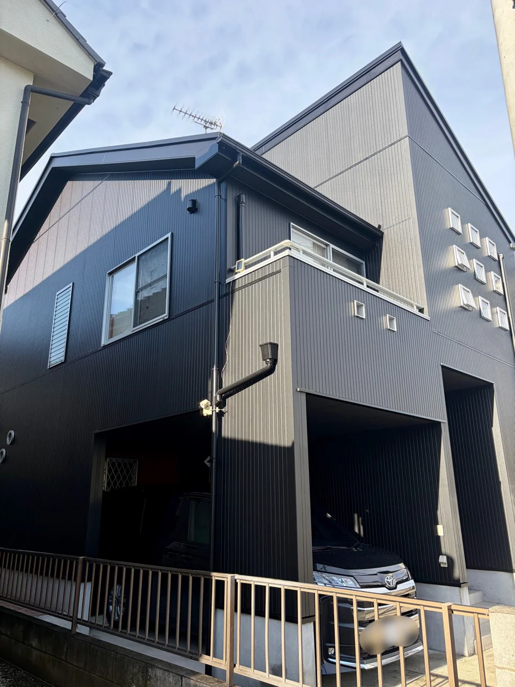
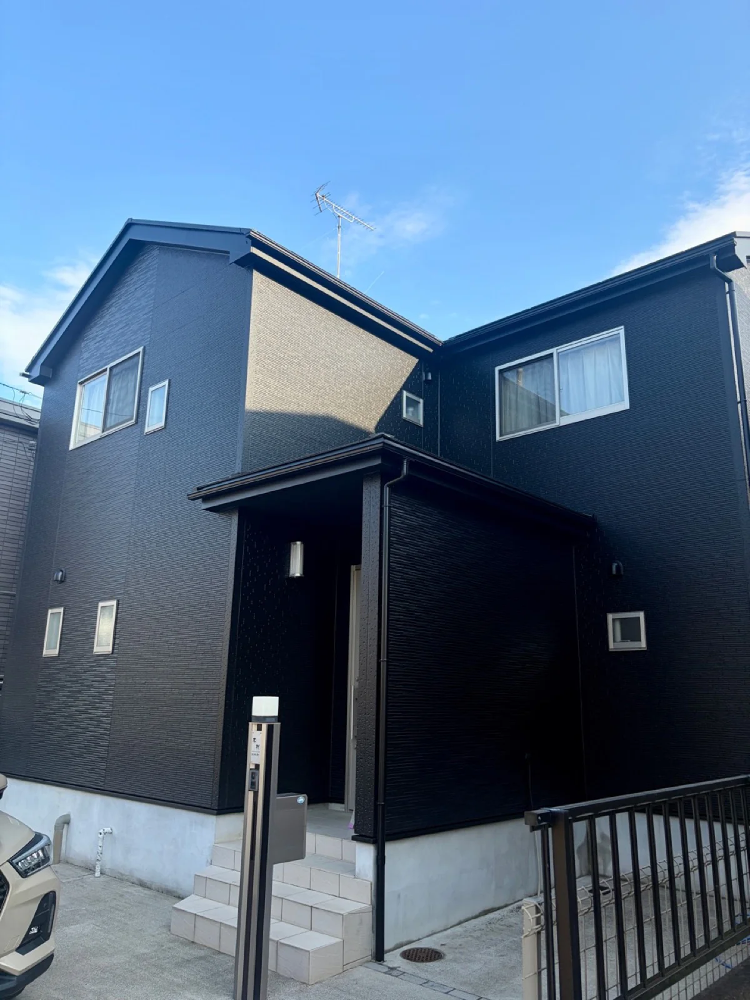
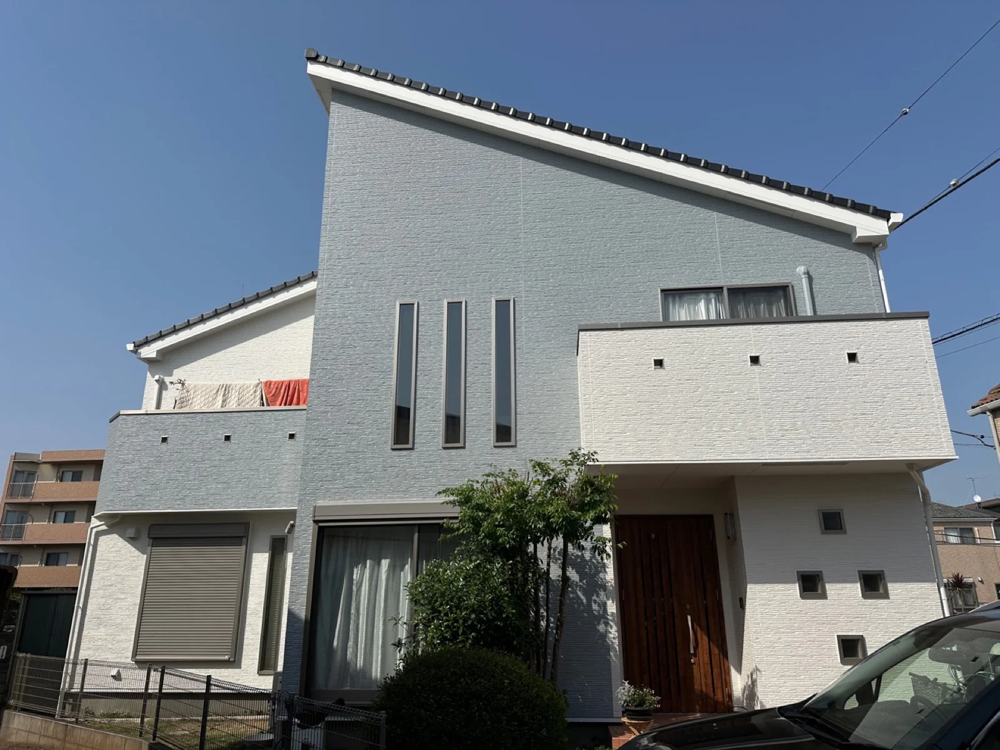
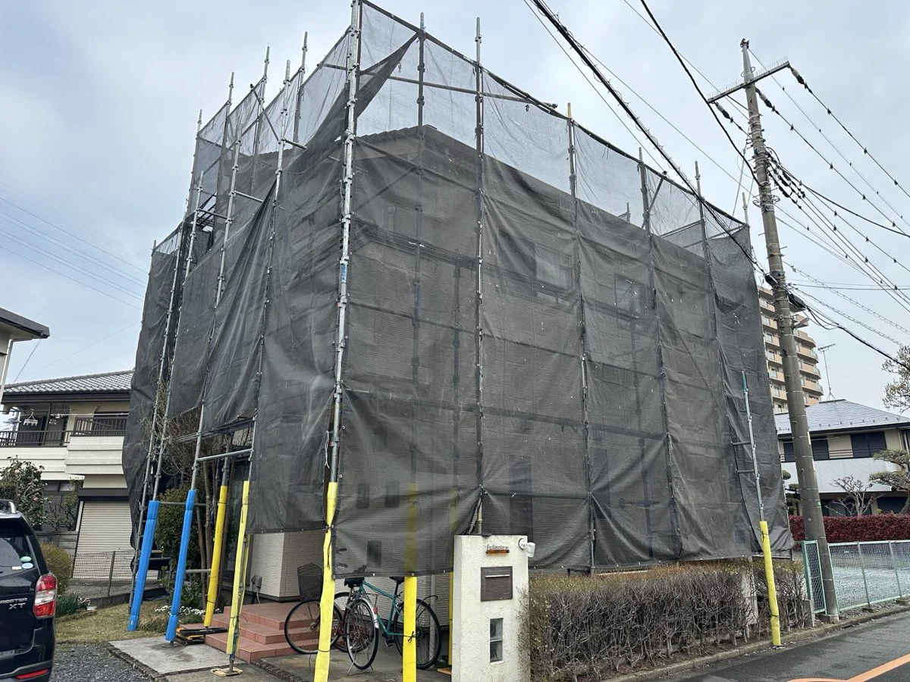
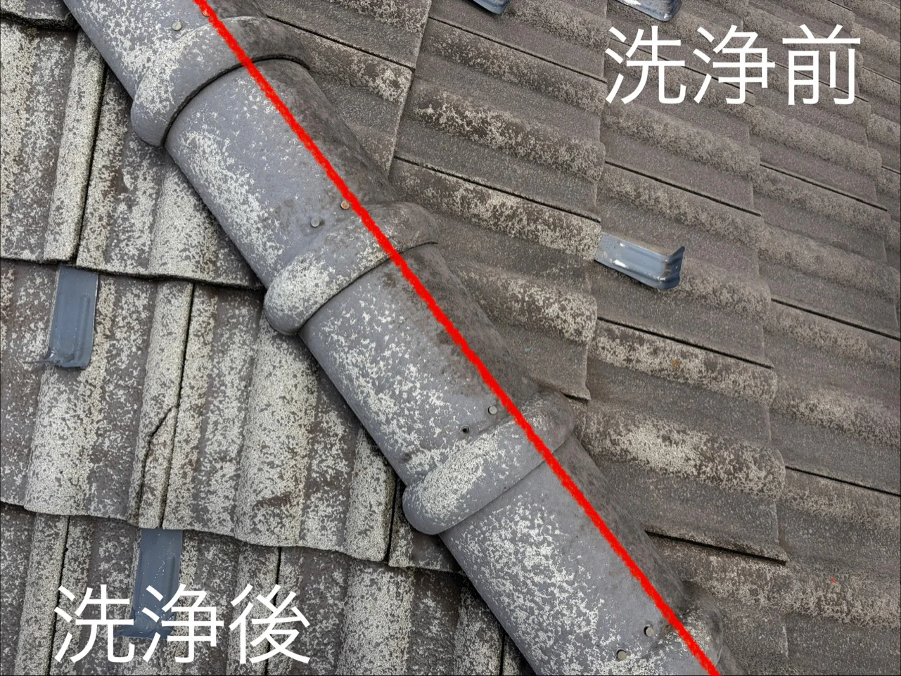
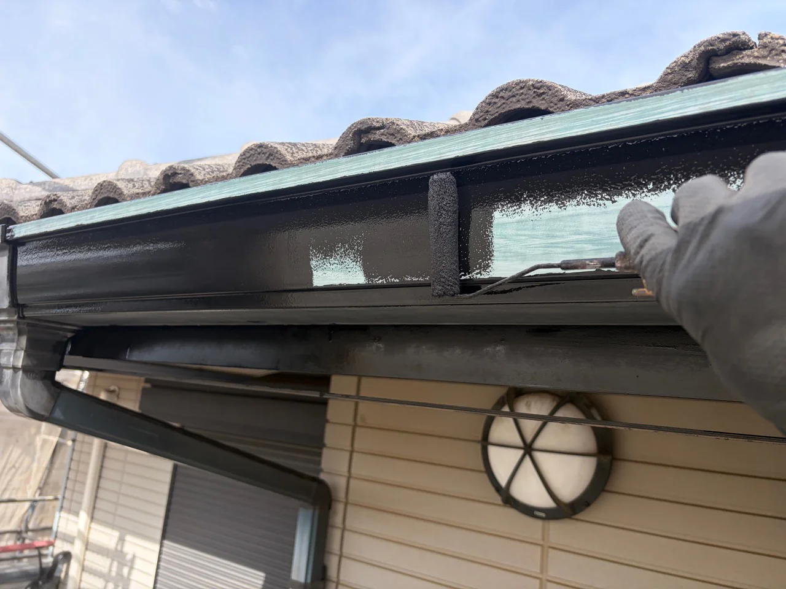

GALLERY
Real Make施工写真ギャラリー
完成した住まいの外観と、仕上がりを支える施工工程を写真でご紹介します。新しい施工写真も、こちらへ追加していきます。

完成写真
塗装後の住まい




施工工程
見えにくい工程も丁寧に進めます。






完成した住まいの外観と、仕上がりを支える施工工程を写真でご紹介します。新しい施工写真も、こちらへ追加していきます。





